Manual Setup
Cheetah is installed on the LCLS servers. This means it should be possible to get started without having to download or compile anything.
First complete the experiment setup instructions below (if not already done).
Then, to use the centrally installed version of Cheetah execute the setup script
> source /reg/g/cfel/cheetah/setup.csh
from your C shell (bash version also available)
[psanacs055:barty]~> source /reg/g/cfel/cheetah/setup.csh
Setting up Cheetah
Using /reg/g/cfel/cheetah/cheetah-latest
[psanacs055:barty]~>
Once executed, the Cheetah GUI can be started using the command
> cheetah-gui
[psanacs055:barty]~> cheetah-gui
IDL Version 8.0 (linux x86_64 m64). (c) 2010, ITT Visual Information Solutions
This starts the Cheetah GUI interface (which runs using the IDL virtual machine in runtime mode).
Instructions on how to set up Cheetah for your experiment are contained below. Make sure you (or someone else) has first followed these instructions or some random error will occur.
Any machine with access to your data in /reg/d/psdm/{experiment} can be used to browse data.
It is necessary to have access to both the data directories and the ‘bsub’ batch queue commands in order to run cheetah and submit batch jobs.
It is best to run from one of the psana nodes (as these have faster data access).
Running on psexport also works (all calculations are sent to the batch queue, so this should not overload the one server, but file access can be a bit slower).
Central installation files are located in the directory /reg/g/cfel/cheetah
Pre-installed Cheetah at LCLS
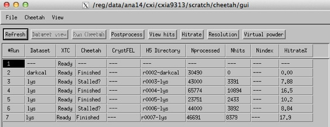
Automatic experiment setup
The LCLS file system layout is very predictable, enabling a significant amount of the experiment configuration process to be automated.
1. Create a working directory in the experiment scratch space
At CXI, all data for your experiment will usually be in a location such as
/reg/d/psdm/cxi/cxi12345
(Of course your experiment number will be different)
In this directory will be subdirectories with the raw data (xtc/), somewhere to write temporary files (scratch/), and a few other directories that don’t matter for now.
[psexport02] cxi12345 > ls
calib ftc hdf5 res scratch usr xtc
Create yourself a working directory inside this scratch space.
2. Start the GUI and follow the ‘new experiment’ option
[psanacs055:barty]~> cheetah-gui
IDL Version 8.0 (linux x86_64 m64). (c) 2010, ITT Visual Information Solutions
You will be presented with an experiment selection dialog box. Select the option option ‘Set up new experiment’.
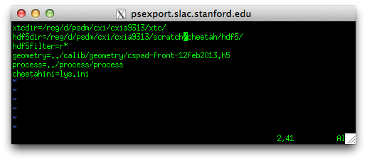
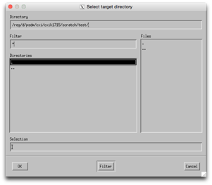
Navigate to your working directory using the file selection dialog box and select ‘OK’
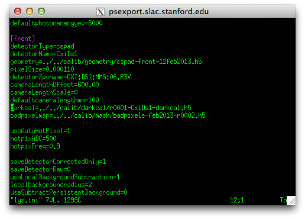
Verify that the detected parameters are correct and press ‘OK’
A script will set up your experiment using the same manual setup operations described below, using the detected parameters to modify files accordingly.
3. Check that it works
You should be ready to go.
The following quick tests will verify whether everything has been properly set up:
-
1)Start the crawler. New XTC files should be detected. Check for complaints. Remember maybe only one run exists.
(Step 4 below)
-
2)Run “darkcal.ini” on the first run. This should work, automatically sending jobs to the batch queue.
(Step 5 below)
Note: CXI sometimes swaps detectors around. This can change detector names in the XTC file. When this happens it is necessary to swap detector names in the psana.cfg file. Check with your point of contact or other analysis guru as to which detector is where, and look at the FAQ page for how to fix this if errors occur.
What lies below are the old instructions for manual configuration. Auto-setup attempts to do this automatically.
If auto-setup does not work or you want to do something a little different (such as draw data from the fast feedback file system), it is necessary to manually edit a few files to tell Cheetah about the location and format of data files, detector calibration, and what analysis to perform.
First, know the location of your data and where temporary files can be written.
At CXI, all data for your experiment will usually be in a location such as
/reg/d/psdm/cxi/cxi12345
In this directory will be subdirectories with the raw data (xtc/), somewhere to write temporary files (scratch/), and a few other directories that don’t matter for now.
[psexport02] cxi12345 > ls
calib ftc hdf5 res scratch usr xtc
1. Download the template
Expand the file /reg/g/cfel/cheetah/template.tar into the location where you want files to be placed:
> tar -xvf /reg/g/cfel/cheetah/template.tar
This will create the cheetah directory with a number of sub-directories containing a ‘starter kit’ of files:
> ls cheetah
calib gui hdf5 process
2. edit gui/crawler.config
Edit the file cheetah/gui/crawler.config
xtcdir should point to the location of your XTC files
hdf5dir should point to where you want the Cheetah output to go. By default let this be the cheetah/hdf5 directory expanded by the template (but it can be elsewhere).
The rest can be left alone for now.
3. edit process/process
Edit the file cheetah/process/process
This script is a front-end to making Cheetah run, enabling data to be processed from the command line by simply typing the one-line command
> ./process <Run#> <cheetah.ini> <tag>
This is the command executed by the ‘Run Cheetah’ button on the front of the GUI.
It should only be necessary to edit the experiment name. The rest should should not need modification, but should be self-explanatory if changes need to be made (for example configuration files in ${expt}/res instead of ${expt}/scratch).
The last three lines are various options for calling the hitfinder script using either (i) the SLAC batch queue, (ii) the SLAC batch queue with a separate job for each XTC stream, or (iii) output to the terminal. Probably no need to change these (ii adds some speed at the expense of complexity, while option iii is useful for debugging if things go really wrong)
Actual details of the job submission process are hidden in the script hitfinder. Probably no need to to touch the hitfinder script at all unless there are problems with how jobs are submitted to the batch queue (search for lines containing ‘bsub’).
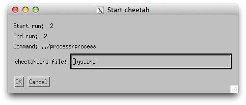
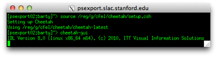
New users must first Set up the Slac analysis environment
Cheetah at SLAC runs inside the SLAC psana analysis framework.
Make sure to follow these instructions to set up your analysis environment. It should only be necessary to do this once, and a range of confusing errors will result if this is not done.
Configuring what Cheetah does is done by editing the cheetah.ini file.
There is a sample nanocrystal analysis file in process/lys.ini, and will look for Bragg peaks to find hits.
Open this file and edit it.
In particular, change the line starting with “darkcal=” to point to the dark calibration file you just created.
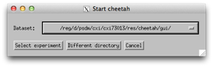
Select a run with data and click the “Run Cheetah” button and specify ‘lys.ini’ as the configuration file
(it is possible to select more than one run at a time).
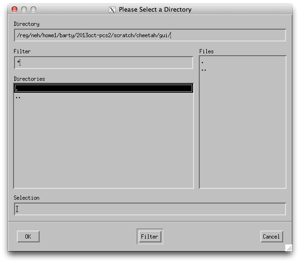
And things should start to happen.
Once again jobs should appear in the batch queue
> bjobs -u all -q psfehq
690066 barty RUN psfehq psexport02 6*psana1311 r0001 Oct 23 07:3
If the crawler is running, the Cheetah status and number of processed frames should update periodically
Data should start to appear in the cheetah/hdf5 directory
If not, something is wrong and it’s time for debugging. In particular look at the output of hdf5/run0xxx/bsub.log.
The setup is now done and it’s time for optimisation of the output.
4. Start the gui
Start the GUI interface using the cheetah-gui command as described on the getting started page.
Click the IDL virtual machine box to dismiss it.
(The Cheetah GUI uses the IDL virtual machine as an environment, which can be downloaded and used for free if you want to run the image browser at home.)
You should then be presented with a list of all previous experiments.
Either select one of the existing experiments, or use ‘Different Directory’ to navigate to the location of the cheetah/gui folder described above, select ‘crawler.config’, and click OK.
This should bring up the interface shown on the getting started page.
This should be sufficient to view an existing data set set up by someone else.

4. enabling command operations and the crawler
Processing of data and updating of the GUI table as an experiment progresses requires the crawler to be started. This little process runs in the background gathering information on the status of XTC files available on disk and the progress of Cheetah jobs. It can overwrite the current table contents, and only one person should run this at any one time (even though many people can view the GUI at once).
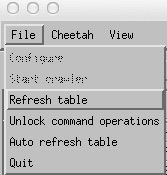
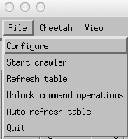
To start the crawler it is first necessary to go
File->Unlock command operations
then
File->Start Crawler
Unlocking command operations enables the Crawler option and the “Run Cheetah” button. This step is deliberately added in order to force one to think before overwriting existing data.
A little window with the crawler should appear on screen. Look in the terminal for any errors.
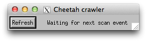
5. create a dark calibration file
The detector needs to be corrected for static offsets, often known as ‘dark frames’. Make sure to take one at the start of the experiment and every few hours during the experiment.
Click the “Run Cheetah” button and specify ‘darkcal.ini’ as the configuration file.

The job should now be go to the batch queue for processing.
Jobs should appear in the batch queue
> bjobs -u all -q psfehq
690066 barty RUN psfehq psexport02 6*psana1311 r0001 Oct 23 07:3
If the crawler is running, the Cheetah status and number of processed frames should update periodically
Data should start to appear in the cheetah/hdf5 directory
In particular, a file called r00xx-CxiDs1-darkcal.h5 should start to appear.
If not, something is wrong and it’s time for debugging
If all goes well, wait for the job to finish then copy the file r00xx-CxiDs1-darkcal.h5 into the cheetah/calib/darkcal directory.
Once the darkcal is finished running, create a bad pixel map from the darkcal using the Cheetah tools Cheetah->badpix from darkcal and save it in the cheetah/calib/masks directory.
6. Edit your cheetah.ini file
8. Time for some analysis (and a cup of tea)
Setup of the guI should now be done and it’s time to analyse some data.
A few hints:
-
1)Review your output. Often. Default parameters may work, or they may not. No analysis should ever be done completely blind. Use the ‘Show hits” button to look at images and refine the hit finding parameters.
-
2)It is convenient to start a new .ini file for each type of sample. The name of the .ini file is used by the GUI to tag runs and update the table, and ends up as the tag name on the HDF5 directories created. Separate names helps keep separate samples apart, and makes it easy to copy/tar/grep directories based on sample name or other experiment parameters. This helps keep data organised and will be of great benefit later on.
-
3)Nothing happening? Seems like your processing job never starts, and nothing is waiting in the batch queue?
Check the View->bsub.log file. This displays the log file from the batch submission process and likely will show some kind of error message. Common mistakes are an error in typing in the darkcal or mask file names.
7. Permissions
Working on your own is easy. Working as a part of a group during an experiment involves setting up directory access permissions so that everyone can see and access the files.
Here’s a quick set of commands to give everyone in your experiment access to the data:
> chgrp -R {cxi12345} cheetah
> chmod -R g+w cheetah
> chmod -R g+s cheetah
where {cxi12345} should of course be replaced by your experiment name